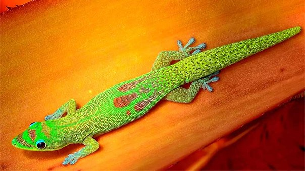
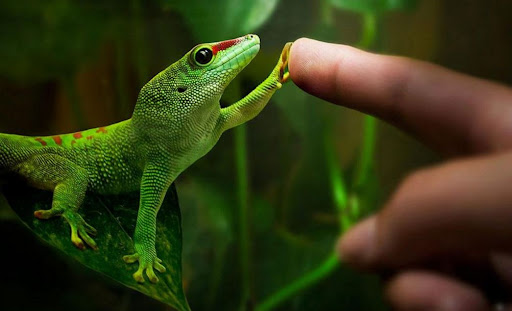

Фельзумы
Род Фельзумы (Phelsuma) — включает ящериц, которые распространены на острове Мадагаскар и некоторых близлежащих островах. Обитают в лесах и ведут исключительно дневной образ жизни. Самцы отличаются наличием рядов желтоватых бедренных и прианальных пор. Одни виды окрашены очень скромно, например, Phelsuma barbouri, живущая в каменистых районах, имеет буро-коричневую окраску. Другие же просто блистательны и кажутся пересыпанными золотыми блестками — например, Ph. laticauda. Размер этих гекконов варьирует от 10 до 20 см. Самый большой и самый популярный — Ph. madagaskariensis grandis — достигает 20 см и более, а самые маленькие — Ph. klemmeri и Ph. pusilla — даже во взрослом состоянии не дорастают до 10 см.

Ящерицы не слишком ручные, легко отбрасывают хвост. Питаются как и большинство ящериц насекомыми, но часть рациона составляют фрукты. Для содержания требуется яркое УФ излучение, температура в теплой точке должна достигать до 35 градусов, минимальная ночная температура 20. В террариум обычно сажают живые растения для поддержания высокой влажности, которая им необходима.
Всего насчитывается 52 вида.
